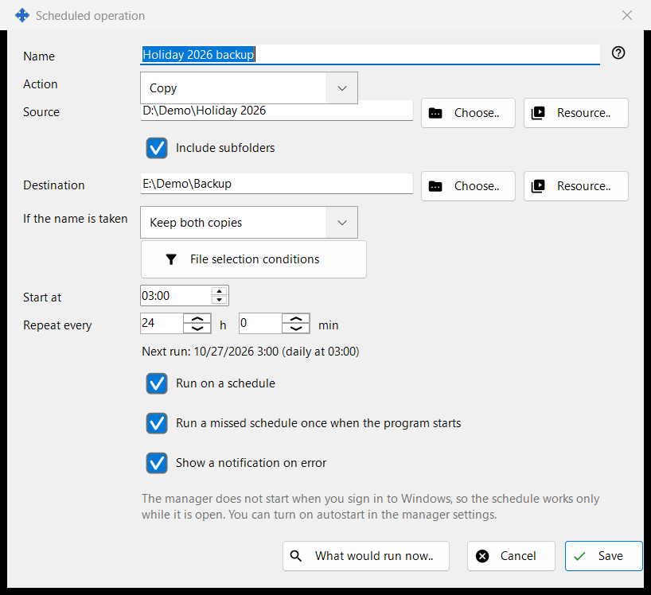
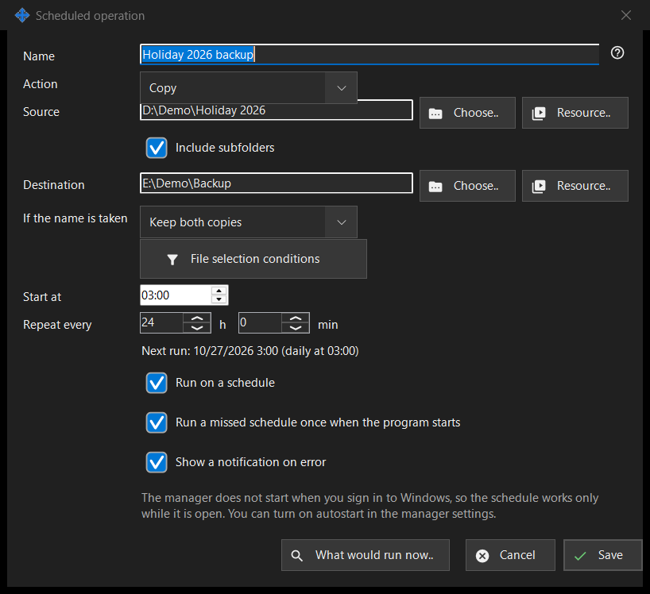

Scheduled operation
What this is for
Edits one scheduled file operation: copy, move, delete or archive files from a source to a destination on a repeating schedule. Scheduled file operations are installed together with the Share Manager - one payload, no separate download and no Windows service - and run while the Share Manager runs in your signed-in session. They need no folder sharing, no server, no open port and no administrator rights. This window opens from 'New..' or 'Edit..' in the Scheduled operations window and on the 'Scheduled file operations' page of the Share Manager settings, and from the viewer's folder menu item 'Schedule an operation for this folder..', which fills in that folder as the source.


In this order
- Enter a Name and choose the Action.
- Set the Source, and the Destination for copy, move and archive, with 'Choose..', 'Resource..' or 'Via Google Drive'.
- For copy and move choose what happens 'If the name is taken'.
- Open 'File selection conditions' to narrow the files.
- Set 'Start at' and 'Repeat every' and keep 'Run on a schedule' ticked.
- Check 'What would run now..' and press 'Save'.
The elements
Getting started
Open the Scheduled operations window from the Share Manager's tray menu, from the viewer's folder menu item 'Scheduled operations..' (it is there for every folder listing) or with a key you give to the viewer command 'Scheduled operations' in the viewer's hotkey settings - it has no key by default. The same list is on the 'Scheduled file operations' page of the Share Manager settings, whose link 'Open in a separate window..' opens it as a window of its own. A safe first operation: press 'New..', choose Copy, take a folder with a few test files as the Source and an empty folder as the Destination, set 'Repeat every', keep 'Run on a schedule' ticked, look at 'What would run now..' (it lists the files and changes nothing) and press 'Save'. Operations run only while 'Run scheduled operations on this computer' is ticked in the Scheduled operations window; unticking it stops every schedule, and 'Run now' still works by hand. The Share Manager has to be running: the link 'Open the autostart setting' leads to its start with Windows sign-in. While the PC sleeps or the Share Manager is closed nothing runs; at the next start a missed run happens once if 'Run a missed schedule once when the program starts' is ticked. 'History..' shows every run.
Action and name conflicts
The Action is Copy, Move, Delete or Archive, and the window shows only the rows that action needs: Delete has no Destination; 'If the name is taken' (Skip, Overwrite, Keep both copies) appears for Copy and Move only; 'Delete the original files after the archive is verified' appears for Archive only and removes originals only after the archive has been read back and checked.
Source and destination
Type a full path or press 'Choose..'. 'Resource..' picks an SFTP server or network folder from the viewer's resource list and is not offered for Archive, which takes ordinary folders and Google Drive only. 'Via Google Drive' appears only when you are signed in to Drive or that side already uses it. When 'Include subfolders' is off, only the files of the source folder itself are processed. Save refuses system and program folders and a destination equal to or inside the source, and says what is wrong.
Via Google Drive
'Via Google Drive' opens a short window that says what this side means. As a source it offers 'What other devices send to this PC' and the folders your other devices publish; as a destination, 'Any of my devices' and each of your devices by name. Files for a destination go in packets through your own Google Drive and reach the device when it picks them up; subfolders are not kept. Files from a source arrive in a temporary folder of this PC and reach the destination under their base names, without subfolders. A packet leaves your Google Drive only after all its files have reached the destination, and a move removes an original only after its packet is on your Google Drive. From a device's folder a run takes what changed since the last complete run. Only one side can use Google Drive; Save refuses Delete and file age conditions for a Google Drive source, and 'What would run now..' warns that what comes via Google Drive becomes known at the run. If Google Drive does not answer, the run is skipped and the next one tries again. No room on Google Drive, a lost sign-in or a refusal from the device stops the run, and the history says why.
Deleting files
When files will be removed (Delete, or Archive with the originals option), a line 'Delete: ..' tells where they go: to the Recycle Bin, or permanently with the reason, for example a network or removable disk has no Recycle Bin. For such an operation Enter does not save; press 'Save' on purpose. A scheduled run never asks questions and records where deleted files went.
File selection conditions
The panel opens by itself when conditions differ from the defaults. File types: All files, Images, Audio, Video, Documents (All files switches the other four off). Modified: All time, New since the last run, Last hour, Last 24 hours. Name mask and Exclude by mask take several masks separated by a semicolon, for example *.jpg;IMG_??.png, compared with the file name. Older than and Younger than are in days and hours, Larger than and Smaller than in MB. 'Include hidden and system files' is off by default.
Schedule
'Start at' sets the time of day and 'Repeat every' the interval in hours and minutes; a whole number of days repeats at the same time. The line under them shows 'Next run: time (rule)' or 'The schedule is off: the operation runs by hand only.' 'Run a missed schedule once when the program starts' and 'Show a notification on error' are separate choices. Another line states that the schedule works only while the Share Manager is running, and whether it starts at Windows sign-in; nothing in this window changes autostart.
Preview and Save
'What would run now..' lists the files the operation would process and changes nothing; a run does not need it. 'Save' stores the operation, or lists what must be fixed. 'Cancel' discards your edits.
Manager settings · SFTP sharing settings · Exchange server settings